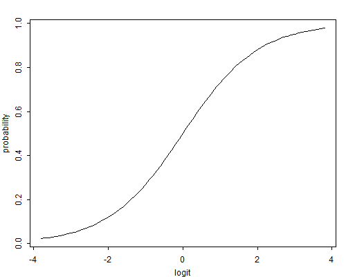

We now turn our attention to regression models for dichotomous data, including logistic regression and probit analysis. These models are appropriate when the response takes one of only two possible values representing success and failure, or more generally the presence or absence of an attribute of interest.
We start by introducing an example that will be used to illustrate the analysis of binary data. We then discuss the stochastic structure of the data in terms of the Bernoulli and binomial distributions, and the systematic structure in terms of the logit transformation. The result is a generalized linear model with binomial response and link logit.
Table 3.1, adapted from Little (1978), shows the distribution of 1607 currently married and fecund women interviewed in the Fiji Fertility Survey of 1975, classified by current age, level of education, desire for more children, and contraceptive use.
Table 3.1. Current Use of Contraception Among Married Women
by Age, Education and Desire for More Children
| Age | Education | Desires More | Contraceptive Use | Total | |
| Children? | No | Yes | |||
| \(<\)25 | Lower | Yes | 53 | 6 | 59 |
| No | 10 | 4 | 14 | ||
| Upper | Yes | 212 | 52 | 264 | |
| No | 50 | 10 | 60 | ||
| 25–29 | Lower | Yes | 60 | 14 | 74 |
| No | 19 | 10 | 29 | ||
| Upper | Yes | 155 | 54 | 209 | |
| No | 65 | 27 | 92 | ||
| 30–39 | Lower | Yes | 112 | 33 | 145 |
| No | 77 | 80 | 157 | ||
| Upper | Yes | 118 | 46 | 164 | |
| No | 68 | 78 | 146 | ||
| 40–49 | Lower | Yes | 35 | 6 | 41 |
| No | 46 | 48 | 94 | ||
| Upper | Yes | 8 | 8 | 16 | |
| No | 12 | 31 | 43 | ||
| Total | 1100 | 507 | 1607 | ||
In our analysis of these data we will view current use of contraception as the response or dependent variable of interest and age, education and desire for more children as predictors. Note that the response has two categories: use and non-use. In this example all predictors are treated as categorical variables, but the techniques to be studied can be applied more generally to both discrete factors and continuous variates.
The original dataset includes the date of birth of the respondent and the date of interview in month/year form, so it is possible to calculate age in single years, but we will use ten-year age groups for convenience. Similarly, the survey included information on the highest level of education attained and the number of years completed at that level, so one could calculate completed years of education, but we will work here with a simple distinction between lower primary or less and upper primary or more. Finally, desire for more children is measured as a simple dichotomy coded yes or no, and therefore is naturally a categorical variate.
The fact that we treat all predictors as discrete factors allows us to summarize the data in terms of the numbers using and not using contraception in each of sixteen different groups defined by combinations of values of the predictors. For models involving discrete factors we can obtain exactly the same results working with grouped data or with individual data, but grouping is convenient because it leads to smaller datasets. If we were to incorporate continuous predictors into the model we would need to work with the original 1607 observations. Alternatively, it might be possible to group cases with identical covariate patterns, but the resulting dataset may not be much smaller than the original one.
The basic aim of our analysis will be to describe the way in which contraceptive use varies by age, education and desire for more children. An example of the type of research question that we will consider is the extent to which the association between education and contraceptive use is affected by the fact that women with upper primary or higher education are younger and tend to prefer smaller families than women with lower primary education or less.
We consider first the case where the response \( y_i \) is binary, assuming only two values that for convenience we code as one or zero. For example, we could define
\[ y_i = \left\{ \begin{array}{ll} 1& \mbox{if the $i$-th woman is using contraception}\cr 0& \mbox{otherwise}. \end{array} \right. \]We view \( y_i \) as a realization of a random variable \( Y_i \) that can take the values one and zero with probabilities \( \pi_i \) and \( 1-\pi_i \), respectively. The distribution of \( Y_i \) is called a Bernoulli distribution with parameter \( \pi_i \), and can be written in compact form as
\[\tag{3.1}\Pr\{Y_i=y_i\} = \pi_i ^{y_i} (1-\pi_i)^{1-y_i},\]for \( y_i=0,1. \) Note that if \( y_i=1 \) we obtain \( \pi_i \), and if \( y_i=0 \) we obtain \( 1-\pi_i \).
It is fairly easy to verify by direct calculation that the expected value and variance of \( Y_i \) are
\[\tag{3.2} \mbox{E}(Y_i) = \mu_i = \pi_i \quad\mbox{and}\quad \mbox{var}(Y_i) = \sigma^2_i = \pi_i(1-\pi_i). \]Note that the mean and variance depend on the underlying probability \( \pi_i \). Any factor that affects the probability will alter not just the mean but also the variance of the observations. This suggest that a linear model that allows the predictors to affect the mean but assumes that the variance is constant will not be adequate for the analysis of binary data.
Suppose now that the units under study can be classified according to the factors of interest into \( k \) groups in such a way that all individuals in a group have identical values of all covariates. In our example, women may be classified into 16 different groups in terms of their age, education and desire for more children. Let \( n_i \) denote the number of observations in group \( i \), and let \( y_i \) denote the number of units who have the attribute of interest in group \( i \). For example, let
\[ y_i = \mbox{number of women using contraception in group $i$}. \]We view \( y_i \) as a realization of a random variable \( Y_i \) that takes the values \( 0,1,\ldots,n_i \). If the \( n_i \) observations in each group are independent, and they all have the same probability \( \pi_i \) of having the attribute of interest, then the distribution of \( Y_i \) is binomial with parameters \( \pi_i \) and \( n_i \), which we write
\[ Y_i \sim B(n_i,\pi_i). \]The probability distribution function of \( Y_i \) is given by
\[\tag{3.3}\Pr\{Y_i = y_i\} = \left(\begin{array}{c}n_i\\ y_i\end{array}\right) \pi_i^{y_i} (1-\pi_i)^{n_i-y_i}\]for \( y_i=0,1,\ldots,n_i \). Here \( \pi_i^{y_i} (1-\pi_i)^{n_i-y_i} \) is the probability of obtaining \( y_i \) successes and \( n_i-y_i \) failures in some specific order, and the combinatorial coefficient is the number of ways of obtaining \( y_i \) successes in \( n_i \) trials.
The mean and variance of \( Y_i \) can be shown to be
\[\tag{3.4} \mbox{E}(Y_i) = \mu_i = n_i \pi_i, \quad\mbox{and}\quad \mbox{var}(Y_i) = \sigma^2_i = n_i \pi_i (1-\pi_i). \]The easiest way to obtain this result is as follows. Let \( Y_{ij} \) be an indicator variable that takes the values one or zero if the \( j \)-th unit in group \( i \) is a success or a failure, respectively. Note that \( Y_{ij} \) is a Bernoulli random variable with mean and variance as given in Equation 3.2. We can write the number of successes \( Y_i \) in group \( i \) as a sum of the individual indicator variables, so \( Y_i = \sum_j Y_{ij} \). The mean of \( Y_i \) is then the sum of the individual means, and by independence, its variance is the sum of the individual variances, leading to the result in Equation 3.4. Note again that the mean and variance depend on the underlying probability \( \pi_i \). Any factor that affects this probability will affect both the mean and the variance of the observations.
From a mathematical point of view the grouped data formulation given here is the most general one; it includes individual data as the special case where we have \( n \) groups of size one, so \( k=n \) and \( n_i=1 \) for all \( i \). It also includes as a special case the other extreme where the underlying probability is the same for all individuals and we have a single group, with \( k=1 \) and \( n_1=n \). Thus, all we need to consider in terms of estimation and testing is the binomial distribution.
From a practical point of view it is important to note that if the predictors are discrete factors and the outcomes are independent, we can use the Bernoulli distribution for the individual zero-one data or the binomial distribution for grouped data consisting of counts of successes in each group. The two approaches are equivalent, in the sense that they lead to exactly the same likelihood function and therefore the same estimates and standard errors. Working with grouped data when it is possible has the additional advantage that, depending on the size of the groups, it becomes possible to test the goodness of fit of the model. In terms of our example we can work with 16 groups of women (or fewer when we ignore some of the predictors) and obtain exactly the same estimates as we would if we worked with the 1607 individuals.
In Appendix B we show that the binomial distribution belongs to Nelder and Wedderburn’s (1972) exponential family, so it fits in our general theoretical framework.
The next step in defining a model for our data concerns the systematic structure. We would like to have the probabilities \( \pi_i \) depend on a vector of observed covariates \( \boldsymbol{x}_i \). The simplest idea would be to let \( \pi_i \) be a linear function of the covariates, say
\[\tag{3.5}\pi_i = \boldsymbol{x}_i'\boldsymbol{\beta},\]where \( \boldsymbol{\beta} \) is a vector of regression coefficients. Model 3.5 is sometimes called the linear probability model. This model is often estimated from individual data using ordinary least squares (OLS).
One problem with this model is that the probability \( \pi_i \) on the left-hand-side has to be between zero and one, but the linear predictor \( \boldsymbol{x}_i'\boldsymbol{\beta} \) on the right-hand-side can take any real value, so there is no guarantee that the predicted values will be in the correct range unless complex restrictions are imposed on the coefficients.
A simple solution to this problem is to transform the probability to remove the range restrictions, and model the transformation as a linear function of the covariates. We do this in two steps.
First, we move from the probability \( \pi_i \) to the odds
\[ \mbox{odds}_i = \frac{\pi_i}{1-\pi_i}, \]defined as the ratio of the probability to its complement, or the ratio of favorable to unfavorable cases. If the probability of an event is a half, the odds are one-to-one or even. If the probability is 1/3, the odds are one-to-two. If the probability is very small, the odds are said to be long. In some contexts the language of odds is more natural than the language of probabilities. In gambling, for example, odds of \( 1:k \) indicate that the fair payoff for a stake of one is \( k \). The key from our point of view is that the languages are equivalent, i.e. one can easily be translated into the other, but odds can take any positive value and therefore have no ceiling restriction.
Second, we take logarithms, calculating the logit or log-odds
\[\tag{3.6}\eta_i = \mbox{logit}(\pi_i) = \log \frac{\pi_i}{1-\pi_i},\]which has the effect of removing the floor restriction. To see this point note that as the probability goes down to zero the odds approach zero and the logit approaches \( -\infty \). At the other extreme, as the probability approaches one the odds approach \( +\infty \) and so does the logit. Thus, logits map probabilities from the range \( (0,1) \) to the entire real line. Note that if the probability is \( 1/2 \) the odds are even and the logit is zero. Negative logits represent probabilities below one half and positive logits correspond to probabilities above one half. Figure 3.1 illustrates the logit transformation.
Figure 3.1 The Logit Transformation
Logits may also be defined in terms of the binomial mean \( \mu_i = n_i \pi_i \) as the log of the ratio of expected successes \( \mu_i \) to expected failures \( n_i-\mu_i \). The result is exactly the same because the binomial denominator \( n_i \) cancels out when calculating the odds.
In the contraceptive use data there are 507 users of contraception among 1607 women, so we estimate the probability as \( 507/1607=0.316 \). The odds are \( 507/1100 \) or \( 0.461 \) to one, so non-users outnumber users roughly two to one. The logit is \( \log(0.461)=-0.775 \).
The logit transformation is one-to-one. The inverse transformation is sometimes called the antilogit, and allows us to go back from logits to probabilities. Solving for \( \pi_i \) in Equation 3.6 gives
\[\tag{3.7}\pi_i = \mbox{logit}^{-1}(\eta_i) =\frac{e^{\eta_i}} { 1 + e^{\eta_i} }.\]In the contraceptive use data the estimated logit was \( -0.775 \). Exponentiating this value we obtain odds of \( \exp(-0.775)=0.461 \) and from this we obtain a probability of \( 0.461/(1+0.461) = 0.316 \).
We are now in a position to define the logistic regression model, by assuming that the logit of the probability \( \pi_i \), rather than the probability itself, follows a linear model.
Suppose that we have \( k \) independent observations \( y_1, \ldots, y_k \), and that the \( i \)-th observation can be treated as a realization of a random variable \( Y_i \). We assume that \( Y_i \) has a binomial distribution
\[\tag{3.8}Y_i \sim B(n_i,\pi_i)\]with binomial denominator \( n_i \) and probability \( \pi_i \). With individual data \( n_i=1 \) for all \( i \). This defines the stochastic structure of the model.
Suppose further that the logit of the underlying probability \( \pi_i \) is a linear function of the predictors
\[\tag{3.9}\mbox{logit}(\pi_i) = \boldsymbol{x}_i'\boldsymbol{\beta},\]where \( \boldsymbol{x}_i \) is a vector of covariates and \( \boldsymbol{\beta} \) is a vector of regression coefficients. This defines the systematic structure of the model.
The model defined in Equations 3.8 and 3.9 is a generalized linear model with binomial response and link logit. Note, incidentally, that it is more natural to consider the distribution of the response \( Y_i \) than the distribution of the implied error term \( Y_i-\mu_i \).
The regression coefficients \( \boldsymbol{\beta} \) can be interpreted along the same lines as in linear models, bearing in mind that the left-hand-side is a logit rather than a mean. Thus, \( \beta_j \) represents the change in the logit of the probability associated with a unit change in the \( j \)-th predictor holding all other predictors constant. While expressing results in the logit scale will be unfamiliar at first, it has the advantage that the model is rather simple in this particular scale.
Exponentiating Equation 3.9 we find that the odds for the \( i \)-th unit are given by
\[\tag{3.10}\frac{\pi_i}{1-\pi_i} = \exp\{ \boldsymbol{x}_i'\boldsymbol{\beta} \}.\]This expression defines a multiplicative model for the odds. For example if we were to change the \( j \)-th predictor by one unit while holding all other variables constant, we would multiply the odds by \( \exp\{\beta_j\} \). To see this point suppose the linear predictor is \( \boldsymbol{x}_i'\boldsymbol{\beta} \) and we increase \( x_j \) by one, to obtain \( \boldsymbol{x}_i'\boldsymbol{\beta}+\beta_j \). Exponentiating we get \( \exp\{\boldsymbol{x}_i'\boldsymbol{\beta}\} \) times \( \exp\{\beta_j\} \). Thus, the exponentiated coefficient \( \exp\{\beta_j\} \) represents an odds ratio. Translating the results into multiplicative effects on the odds, or odds ratios, is often helpful, because we can deal with a more familiar scale while retaining a relatively simple model.
Solving for the probability \( \pi_i \) in the logit model in Equation 3.9 gives the more complicated model
\[\tag{3.11}\pi_i = \frac{ \exp\{ \boldsymbol{x}_i'\boldsymbol{\beta} \} } { 1 + \exp\{ \boldsymbol{x}_i'\boldsymbol{\beta} \} }.\]While the left-hand-side is in the familiar probability scale, the right-hand-side is a non-linear function of the predictors, and there is no simple way to express the effect on the probability of increasing a predictor by one unit while holding the other variables constant. We can obtain an approximate answer by taking derivatives with respect to \( x_j \), which of course makes sense only for continuous predictors. Using the quotient rule we get
\[ \frac{ \mbox{d} \pi_i}{\mbox{d} x_{ij}} = \beta_j \pi_i (1-\pi_i). \]Thus, the effect of the \( j \)-th predictor on the probability \( \pi_i \) depends on the coefficient \( \beta_j \) and the value of the probability. Analysts sometimes evaluate this product setting \( \pi_i \) to the sample mean (the proportion of cases with the attribute of interest in the sample). The result approximates the effect of the covariate near the mean of the response.
In the examples that follow we will emphasize working directly in the logit scale, but we will often translate effects into odds ratios to help in interpretation.
Before we leave this topic it may be worth considering the linear probability model of Equation 3.5 one more time. In addition to the fact that the linear predictor \( \boldsymbol{x}_i'\boldsymbol{\beta} \) may yield values outside the \( (0,1) \) range, one should consider whether it is reasonable to assume linear effects on a probability scale that is subject to floor and ceiling effects. An incentive, for example, may increase the probability of taking an action by ten percentage points when the probability is a half, but couldn’t possibly have that effect if the baseline probability was 0.95. This suggests that the assumption of a linear effect across the board may not be reasonable.
In contrast, suppose the effect of the incentive is 0.4 in the logit scale, which is equivalent to approximately a 50% increase in the odds of taking the action. If the original probability is a half the logit is zero, and adding 0.4 to the logit gives a probability of 0.6, so the effect is ten percentage points, just as before. If the original probability is 0.95, however, the logit is almost three, and adding 0.4 in the logit scale gives a probability of 0.97, an effect of just two percentage points. An effect that is constant in the logit scale translates into varying effects on the probability scale, adjusting automatically as one approaches the floor of zero or the ceiling of one. This feature of the transformation is clearly seen from Figure 3.1.